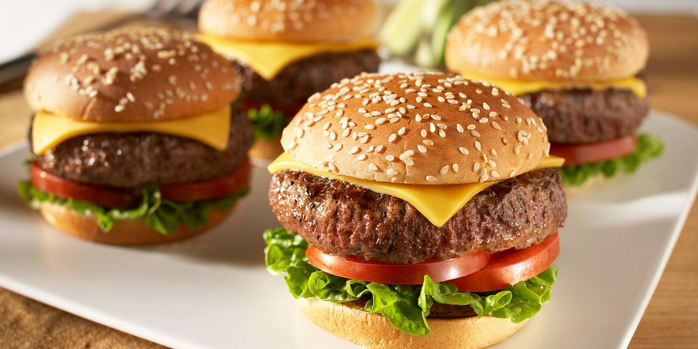

Tasty Cheeseburger

A tasty cheeseburger only for you
A traditional grilled sandwich that consists of ground meat made into a patty, cooked, topped with a slice of cheese, and placed between two halves of a bun
Made for all gourmets out there
Ingredients
- 1 pound Ground Beef (93% lean or leaner)
- 1 or 2 teaspoons steak seasoning blend
- 4 hamburger buns, split
- 4 slices cheese (such as Cheddar, American, Swiss)
- 4 lettuce leaves
- 4 tomato slices
Steps
- Combine Ground Beef and steak seasoning in large bowl, mixing lightly but thoroughly. Lightly shape into four 1/2-inch thick patties
- Place patties on grid over medium, ash-covered coals. Grill, covered, 8 to 10 minute
- About 2 minutes before burgers are done, place buns, cut sides down, on grid. Grill until lightly toasted
- During last minute of grilling, top each burger with cheese slice
- Line bottom of each bun with lettuce; top with tomato, burger and toppings, as desired
- Close sandwiches